<!DOCTYPE html>
<html lang="en">

</html>

<head>
    <meta charset="UTF-8">
    <meta name="viewport" content="width=device-width, initial-scale=1.0">
    <meta http-equiv="X-UA-Compatible" content="ie=edge">
    <title>Ejercicio 3</title>
    <link rel="stylesheet" href="CSS/style.css">
</head>

<body>

    <header>

        <nav class="navBar">
            <ul class="menu">
                <li><button class="button" id="button1"><b>Lunes 7</b></button></li>
                <li><button class="button" id="button2"> <b>Martes 8</b></button></li>
                <li><button class="button" id="button3"><b>Miércoles 9</b></button></li>
                <li><button class="button" id="button4"><b>Jueves 10</b></button></li>
                <li><button class="button" id="button5"><b>Viernes 11</b></button></li>
            </ul>
        </nav>
    </header>

    <main>

        <h1> Una visión perversa </h1>

        <section class="posts">

            <article class="post1" id="post1">

                <h2>Lunes 7</h2>

                <p> La semana comienza con una actividad bastante peculiar y fuera de lugar durante la clase de
                    Administracion
                    de Bases de Datos, en la que de pronto el maestro nos mostro un video bastante raro, en el que se
                    podia ver a un sujeto con una mascara hablando de un plan muy elaborado para hacer volar la
                    universidad el dia viernes.
                </p>

                

                <p>El video fue bastante raro, y genero bastante controversia entre los estudiantes. Luego de ver el
                    video se nos pidio analizar un codigo QR, el cual contenia un mensaje de un sujeto que se hacia
                    llamar "Kurt", y que al parecer precisaria de nuestra ayuda para evitar el plan malevolo del sujeto
                    de mascara.
                    Dejo un fragmento de su mensaje.
                </p>

                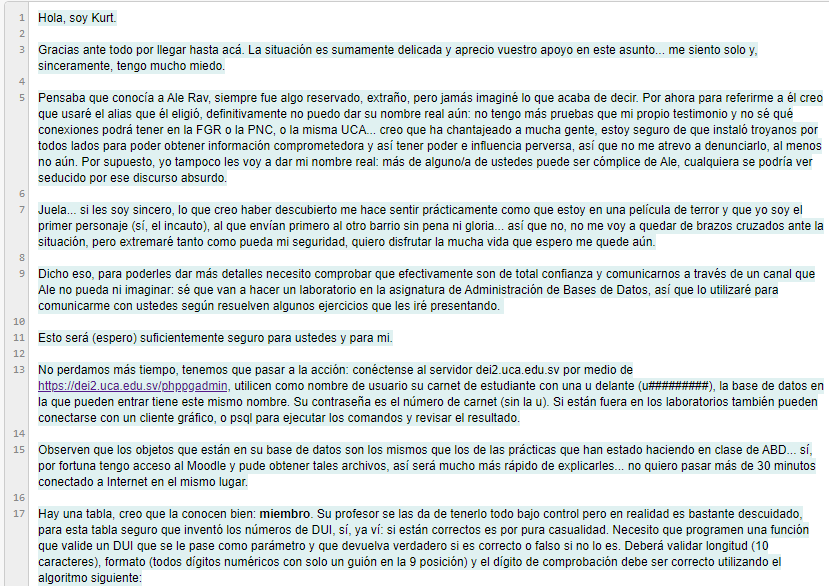

                <p>Como se puede ver, el sujeto precisa de nuestra ayuda y conocimiento sobre bases de datos para crear
                    una funcion en la que se validen los DUI de cada persona dentro del registro de manera que todo se
                    encuentre en orden.
                    La funcion que se crearia nos permitiria avanzar en el "juego". Ya que despues de creada la funcion
                    y haber verificado su funcionamiento, recibimos un nuevo mensaje de "Kurt" en el que nos pedia ir al
                    Centro Polideportivo el dia martes a buscar un nuevo codigo QR, con nuevas indicaciones y de esa
                    manera ir atrasando el plan de Ale Rav.
                    A continuacion muestro la funcion creada para validad los numero de DUI:
                </p>

                <pre>CREATE OR REPLACE FUNCTION valida_DUI(DUI VARCHAR) RETURNS BOOLEAN AS $$
                        DECLARE
                            chequeo_s CHAR(1);
                            numero_s CHAR(9);
                            chequeo SMALLINT;
                            numero INTEGER;
                            suma INTEGER;
                            posicion SMALLINT;
                            digito SMALLINT;
                            resto SMALLINT;
                        BEGIN
                            IF lenght(DUI) !=10 THEN
                                RAISE NOTICE 'La longitud del DUI % es incorrecta', DUI;
                                RETURN FALSE;
                            ELSEIF position('-' in DUI)!= 9 THEN
                                RAISE NOTICE 'La posicion del guion en el DUI % es incorrecta', DUI;
                                RETURN FALSE
                            END IF;
                        
                            numero_s:=substring(DUI from 1 for 8);
                            chequeo_s:=numero_s(DUI from 10 for 1);
                        
                            BEGIN
                                chequeo:=chequeo_s::SMALLINT;		
                                numero:=numero_s::INTEGER;
                                EXCEPTION WHEN data_exception THEN
                                    RAISE NOTICE 'EL DUI % contiene caracteres no numericos',DUI;
                                RETURN FALSE;
                            END;
                        
                            RAISE INFO 'Formato OK. Calculando checksum...';
                            posicion:=1;
                            suma:=0;
                            FOR multiplicador IN REVERSE 9..2 LOOP
                                digito:=substring(DUI from posicion for 1)::SMALLINT;
                                suma:=suma+multiplicador*digito::SMALLINT;
                                RAISE INFO 'posicion %, digito %, multiplicador %, suma %', posicion,
                                posicion:=posicion+1;
                            END LOOP;
                        
                            resto:=10-mod(suma,10);
                        
                            IF resto=chequeo THEN
                                RETURN TRUE;
                            ELSE
                                RAISE NOTICE 'El DUI  % es invalido segun digito de chequeo % != %', DUI, chequeo, resto;
                                RETURN FALSE;
                            END IF;
                        END;	
                        $$ LANGUAGE plpgsql;</pre>
            </article>

            <article class="post2" id="post2">

                <h2>Martes 8</h2>

                <p> Al dia siguiente, tal y como "Kurt" lo solicito, me dirigi al Centro Polideportivoen busca de un
                    nuevo codigo QR, pase varios minutos buscandolo, ya que no se sabia su ubicacion exacta. Pregunte a
                    alguno compañeros que encontré en el camino, pero no sabían. Finalmente lo econtramos, esta cerca de
                    las mesas de ping-pong, específicamente en la mese frente al gimnasio
                </p>

                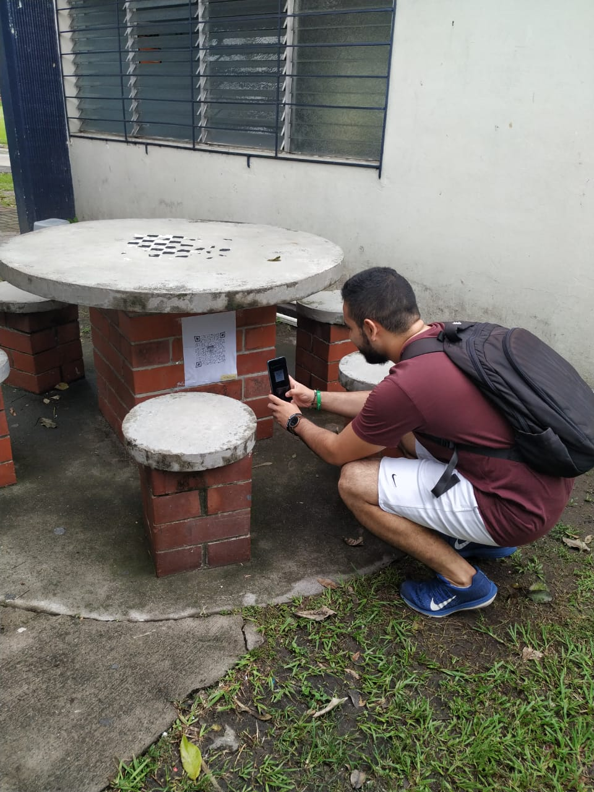

                <p>AL igual que el primer código, este nos redireccionaba a un sitio web que contenía un nuevo mensaje,
                    en este caso era un nuevo sujeto: "Ada Jarvis", que se encargaría de darnos nuevas indicaciones, y
                    un nuevo trabajo.</p>

                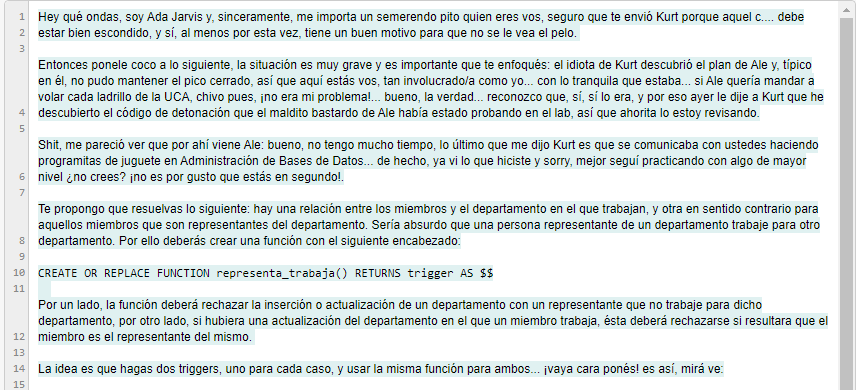

                <p>El nuevo ejercicio consistía en crear una funcion en la que se verificara que un miembro
                    representante de un departamento perteneciera en realidad a ese departamento, caso contrario, en
                    caso de querer insertar o actualizar algún registro, la función rechazarñia la petición.
                    Posteriormente, se realizarían dos triggers, en los que se verificaría todo el proceso y se
                    utilizaría la misma función creada.
                    A continuacion se muestra el código de la función y la creación de los trigger:
                </p>

                <pre>CREATE OR REPLACE FUNCTION representa_trabaja() RETURNS TRIGGER AS $$
                        DECLARE
                            departamento miembro.denominacion_departamento%TYPE;
                        BEGIN
                            IF (TG_RELNAME = 'departamento' AND (TG_OP = 'INSERT' OR TG_OP = 'UPDATE')) THEN
                        
                                SELECT INTO departamento denominacion_departamento FROM miembro WHERE
                                DUI=NEW.DUI_miembro_representante;
                                
                                IF departamento!=NEW.denominacion THEN
                                    RAISE EXCEPTION 'EL miembro de DUI % no puede representar %, porque trabaja actualmente para %',
                                    NEW.DUI_miembro_representante, NEW.denominacion, departamento;
                                END IF;
                            ELSE
                                IF(TG_RELNAME = 'miembro' AND TG_OP = 'UPDATE') THEN
                                
                                    SELECT INTO departamento denominacion FROM departamento WHERE
                                    DUI.miembro_representante=NEW.DUI;
                                
                                    IF departamento IS NOT NULL AND departamento!=NEW.denominacion_departamento THEN
                                        RAISE EXCEPTION 'El miembro de DUI % no puede cambiar al departamento %, porque esta representando
                                        actualmente %. Debe cambiar de representante primero.', NEW.DUI, NEW.denominacion_departamento, departamento;
                                    END IF;
                                END IF;	
                            END IF;
                            RETURN NEW;
                        END;
                        $$ LANGUAGE plpgsql;
                        CREATE TRIGGER si_representa_debe_trabajar BEFORE INSERT OR UPDATE ON departamento FOR EACH ROW
                        EXECUTE PROCEDURE representa_trabaja();
                        CREATE TRIGGER si_representa_no_cambia_trabajo BEFORE UPDATE ON miembro FOR EACH ROW
                        EXECUTE PROCEDURE representa_trabaja();</pre>
            </article>

            <article class="post3" id="post3">

                <h2>Miércoles 9</h2>

                <p> Luego de haber realizado la prueba del día martes, el juego nos condujo a un nuevo lugar, debíamos
                    ir a ver el progreso del mural de los Mártires UCA que se esta diseñando y pintando en el atrio de
                    las Aulas D, probablemente ahí encontraríamos una nueva pista. Efectivamente se contraban varos
                    códigos QR que podíamos analizar, uno de ellos se encontraba escondido en un pilar que sostiene las
                    gradas del edificio.
                </p>

                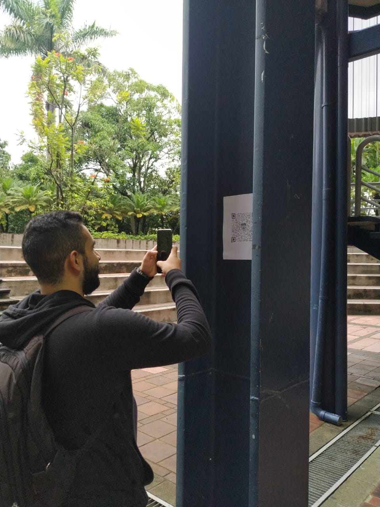

                <p>Este codigo QR no era distinto a los demás.Ahora contenía un nuevo desafío: este nos pedía crear una
                    nueva función y sus respectivos trigger, en los que se verificara que cada perteneciera a sus
                    correspondiente departamento, ya que existe el problema de que un miembro apareciera en dos
                    departamentos a la vez. Se debe verificar que perteneza únicamente al departamento de ingenieria,
                    ventas o gestión, en caso de que existiera en dos y se desea dejar en un departamento, habrá que
                    eliminar los registros necesarios y luego insertarlos de nuevo, el mismo proceso se realizaría en
                    caso de actualizar los registros.</p>

                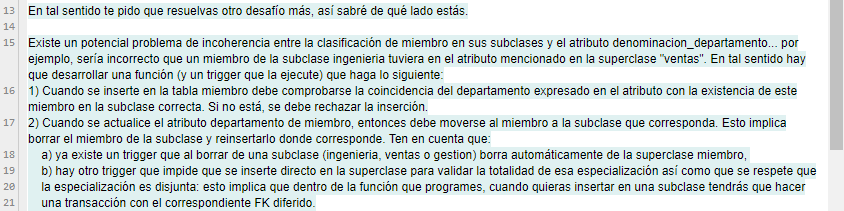

                <p>A continuación se muestra la solución del ejercicio:</p>

                <pre>CREATE OR REPLACE FUNCTION miembro_subclase_trabaja() RETURNS TRIGGER AS $$
                        DECLARE
                            departaamento miembro.denominacion_departamento%TYPE;
                            DUI miembro.dui%TYPE;
                        BEGIN
                            IF(TG_OP = 'INSERT') THEN
                                IF(NEW.denominacion_departamento = 'Ingenieria') THEN
                                
                                    SELECT INTO DUI DUI_miembro FROM ingenieria WHERE DUI_miembro = NEW.DUI;
                                    RAISE INFO 'Chequeo miembro de DUI % en ingenieria', NEW.DUI;
                                    IF(NOT FOUND) THEN
                                        RAISE EXCEPTION 'El miembro de DUI % no esta previamente en la tabla de ingenieria', NEW.DUI;
                                    END IF;
                                ELSEIF NEW.denominacion_departamento=Ventas' THEN
                                    
                                    SELECT INTO DUI FROM ventas WHERE DUI_miembro=NEW.DUI;
                                    RAISE INFO 'Chequeo miembro de DUI % en ventas', NEW.DUI;
                                    IF(NOT FOUND) THEN
                                        RAISE EXCEPTION 'EL miembro de DUI % no esta previamente en la tabla de ventas', NEW.DUI;
                                    END IF;
                                ELSE
                                    SELECT INTO DUI FROM gestion WHERE DUI_miembro=NEW.DUI;
                                    RAISE INFO ' Chequeo miembro de DUI % en gestion', NEW.DUI;
                                    IF(NOT FOUND) THEN
                                        RAISE EXCEPTION 'EL miembro de DUI % no esta previamente en la tabla de gestion', NEW.DUI;
                                    END IF;
                                END IF;
                            ELSE
                        
                                IF(OLD.denominacion_departamento='Ingenieria') THEN
                                    DELETE FROM ingenieria WHERE DUI_miembro=OLD.DUI;
                                ELSEIF(OLD.denominacion_departamento='Ventas') THEN
                                    DELETE FROM ventas WHERE DUI_miembro=OLD.DUI;
                                ELSE
                                    DELETE FROM gestion WHERE DUI_miembro=OLD.DUI;
                        
                                IF(NEW.denominacion_departamento = 'Ingenieria') THEN
                                    BEGIN
                                        SET CONSTRAINTS fk_ingenieria_miembro DEFERRED;
                                        insert into ingenieria values(NEW.DUI);
                                        insert into miembro values(NEW.DUI, NEW.nombre, NEW.denominacion_departamento);
                                    END;
                                ELSEIF(NEW.denominacion_departamento = 'Ventas') THEN
                                    BEGIN
                                        SET CONSTRAINTS fk_ventas_miembro DEFERRED;
                                        insert into ventas values(NEW.DUI);
                                        insert into miembro values(NEW.DUI, NEW.nombre, NEW.denominacion_departamento);
                                    END;
                                ELSE
                                    BEGIN
                                        SET CONSTRAINTS fk_gestion_miembro DEFERRED;
                                        insert into gestion values(NEW.DUI);
                                        insert into miembro values(NEW.DUI, NEW.nombre, NEW.denominacion_departamento);
                                    END;
                            '	END IF;
                                RAISE NOTICE 'Se ha trasladado al miembro de DUI % de % a %', NEW.DUI, OLD.denominacion_departamento,
                                NEW.denominacion_departamento;
                        
                            END IF;
                            RETURN NEW;
                        END;
                        $$ LANGUAGE plpgsql;
                        CREATE TRIGGER miembro_trabaja_subclases AFTER INSERT OR UPDATE ON miembro FOR EACH ROW
                        EXECUTE PROCEDURE miembro_subclase_trabaja();</pre>

                <p>Ese mismo dia se nos pidió como ejercicio extra verificar un codigo creado por Ale Rav en el que se
                    podía ver, el diseño de un programa para activar una bomba, la cual seguramente utilizaría Ale Rav
                    para detonarla en la universidad el viernes. El código es totalmente funcional.</p>

                <pre>#include <stdio.h>
                        #include <iostream>
                        #include <cstdlib>
                        #include <pthread.h>
                        #include <unistd.h>
                        #include <string.h>
                        
                        void sequencer(){
                            std::cout << "Starting sequence" << std::endl;
                            for (int i = 0; i < 5; i++){
                                std::cout << "." << std::endl;
                                sleep(1);
                            }
                            std::cout << "Security filter: passed" << std::endl;
                            std::cout << "user: Ale Rav" << std::endl;
                            sleep(1);
                            std::cout << "pass: ********" << std::endl;
                            sleep(1);
                            std::cout << "Uncrypting" << std::endl;
                            sleep(2);
                            system("clear");
                        
                        }
                        
                        void *covering(void *arg){
                            std::string element;
                            std::cout << "Ingrese el simbolo del elemento de la tabla periodica a utilizar para la bomba: ";
                            std::cin >> element;
                        
                            if(element == "U-235" || element == "U235" || element == "u235" || element == "U" || element == "u"){
                                std::cout << "Elemento encontrado exitosamente" << std::endl;
                                std::cout << "Configurando...";
                                sleep(2);
                                return NULL;
                            }
                            else{
                                std::cout << "Incorrecto, saliendo del programa de detonacion" << std::endl;
                                exit(0);
                            }
                        }
                        
                        void confirmation(void *arg){
                            
                            char *conf = (char *)arg;
                        
                            printf("\n¿Desea realmente desactivar la bomba?\n");
                            printf("Ingrese 'S' o 'n': ");
                            std::cin >> *conf;
                            return;
                        }
                        
                        void *inactive(void *arg){
                            char *cad = (char *)arg;
                            if (*cad == 'S' || *cad == 's'){
                                printf("\nLa bomba ha sido desactivada.\n");
                            }
                            else{
                                printf("\nBomba activa.\n");
                            }
                            
                            return NULL;
                        }
                        
                        pthread_t h1;
                        pthread_t h2;
                        
                        char con = 'n';
                        
                        int main(){
                            
                            sequencer();
                            
                            pthread_create(&h1,NULL, covering,NULL);
                            pthread_join (h1,NULL);
                            
                            confirmation(&con);
                            
                            pthread_create(&h2,NULL, inactive,&con);
                            pthread_join (h2,NULL);
                            
                            return 0;
                        }</pre>
            </article>

            <article class="post4" id="post4">

                <h2>Jueves 10</h2>

                <p> Al parecer todo se encontraba bajo control, luego de haber realizado todas las anteriores funciones
                    y desafíos. Sin embargo algo salió mal, Ale Rav descubrió que alguien lo había traicionado y sabía
                    de su plan. Para esto el decidió hacer un nuevo video en el que decía entre otras cosas, que los
                    esfuerzos por tratar de detenerlo serían en vano.

                </p>

                

                <p> Ante esto, Kurt decidió enviarnos un nuevo mensaje, siempre en un código QR, el cual se tuvo que
                    salir del salñon de clases para ir a buscarlo. EL código QR venía ni más ni menos que del cielo,
                    bajando en un dron cerca de la zona de las terrazas de las Aulas B. Dicho código tenía nuevas
                    instrucciones.
                </p>

                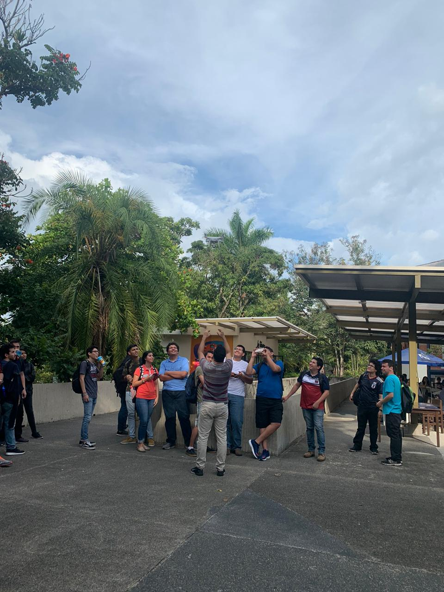
                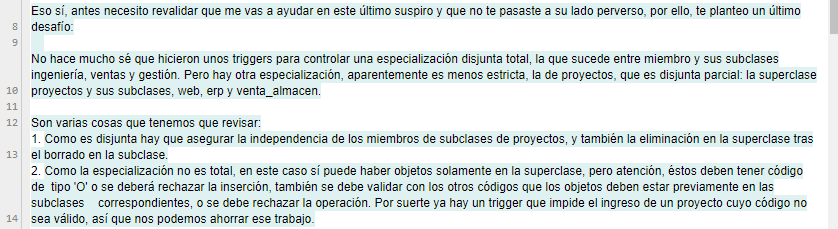

                <p>Ahora se nos pedía relizarvarias funciones con sus respectivos trigger, para poder controlar y
                    verificar el
                    ingreso o existencia de proyectos dentro de la base de datos. Al igual que el trigger que se hizo el
                    día anterior, existía la posibilidad de que los proyectos pertenecieran a un campo erróneo o que
                    existieran dos proyectos del mismo, o se deseara ingresar uno en donde no corresponde. La solución
                    del desafío se presenta a continuación:</p>

                <pre>--Función que cuando la elimine a algún elemento de las subclases lo eliminen automáticamente de la superclase:
                    CREATE OR REPLACE FUNCTION borra_proyecto_superclase() RETURNS TRIGGER AS $$
                        BEGIN
                            DELETE FROM proyecto WHERE codigo=OLD.codigo_proyecto;
                            RAISE NOTICE 'A l borrar % de % lo hemos borrado de la tabla de proyectos',OLD.codigo_proyecto, TG_RELNAME;
                        END;
                        $$ LANGUAGE plpgsql;
                        CREATE TRIGGER proyecto_erp AFTER DELETE ON erp FOR EACH ROW 
                        EXECUTE PROCEDURE borra_proyecto_superclase();
                        CREATE TRIGGER proyecto_web AFTER DELETE ON web FOR EACH ROW 
                        EXECUTE PROCEDURE borra_proyecto_superclase();
                        CREATE TRIGGER proyecto_venta_almacen AFTER DELETE ON venta_almacen FOR EACH ROW 
                        EXECUTE PROCEDURE borra_proyecto_superclase();</pre><br>

                <pre>--Función que, dado que la especialización es disjunta, garantice que no pueda existir el mismo objeto en más de una subclase:

                        CREATE OR REPLACE FUNCTION proyecto_ya_esta_en_otra_subclase() RETURN TRIGGER AS $$
                        DECLARE 
                            prueba_web RECORD;
                            prueba_erp RECORD;
                            prueba_venta_almacen RECORD;
                        BEGIN
                            IF TG_RELNAME = 'erp' THEN
                                SELECT INTO prueba_web * FROM web WHEREE codigo_proyectyo=NEW.codigo_proyecto;
                                IF(prueba_web.codigo_proyecto IS NOT NULL) THEN
                                    RAISE EXCEPTION 'EL proyecto % ya pertenece a web', NEW.codigo_proyecto;
                                END IF;
                                SELECT INTO prueba_venta_almacen * FROM venta_almacen WHERE codigo_proyectyo=NEW.codigo_proyecto;
                                IF(prueba_venta_almacen.codigo_proyecto IS NOT NULL) THEN
                                    RAISE EXCEPTION 'EL proyecto % ya pertenece a ventas_almacen', NEW.codigo_proyecto;
                                END IF;
                            ELSEIF TG_RELNAME = 'web' THEN
                                SELECT INTO prueba_erp * FROM erp WHEREE codigo_proyectyo=NEW.codigo_proyecto;
                                IF(prueba_erp.codigo_proyecto IS NOT NULL) THEN
                                    RAISE EXCEPTION 'EL proyecto % ya pertenece a erp', NEW.codigo_proyecto;
                                END IF;
                                SELECT INTO prueba_venta_almacen * FROM venta_almacen WHERE codigo_proyectyo=NEW.codigo_proyecto;
                                IF(prueba_venta_almacen.codigo_proyecto IS NOT NULL) THEN
                                    RAISE EXCEPTION 'EL proyecto % ya pertenece a ventas_almacen', NEW.codigo_proyecto;
                                END IF;
                            ELSE
                                SELECT INTO prueba_web * FROM web WHEREE codigo_proyectyo=NEW.codigo_proyecto;
                                IF(prueba_web.codigo_proyecto IS NOT NULL) THEN
                                    RAISE EXCEPTION 'EL proyecto % ya pertenece a web', NEW.codigo_proyecto;
                                END IF;
                                SELECT INTO prueba_erp * FROM erp WHEREE codigo_proyectyo=NEW.codigo_proyecto;
                                IF(prueba_erp.codigo_proyecto IS NOT NULL) THEN
                                    RAISE EXCEPTION 'EL proyecto % ya pertenece a erp', NEW.codigo_proyecto;
                                END IF;
                            END IF;
                            RETURN NEW;
                        END;
                        $$ LANGUAGE plpgsql;
                        CREATE TRIGGER proyecto_erp_no_en_otras BEFORE INSERT OR UPDATE ON erp 
                        FOR EACH ROW 
                        EXECUTE PROCEDURE proyecto_ya_esta_en_otra_subclase();
                        CREATE TRIGGER proyecto_venta_almacen_no_en_otras BEFORE INSERT OR UPDATE ON 
                        venta_almacen FOR EACH ROW 
                        EXECUTE PROCEDURE proyecto_ya_esta_en_otra_subclase();
                        CREATE TRIGGER proyecto_web_no_en_otras BEFORE INSERT OR UPDATE ON web 
                        FOR EACH ROW 
                        EXECUTE PROCEDURE proyecto_ya_esta_en_otra_subclase();</pre><br>

                <p>--Función para comprobación de que los proyectos están siendo introducidos en la subclase correcta.
                    Es importante notar que aunque la especialización es parcial, si los proyectos son de tipo Web,
                    Venta_almacen o ERP, deben ser a la vez introducidos en la subclase correspondiente y en proyecto,
                    como si fuera total. Para ello debe tomarse en cuenta que los respectivos FK de las subclases a la
                    superclase son diferibles.</p>

                <pre>
                            CREATE OR REPLACE FUNCTION comprueba_proyecto_subclase() RETURNS TRIGGER AS $$
                                DECLARE 
                                    prueba_web RECORD;
                                    prueba_erp RECORD;
                                    prueba_venta_almacen RECORD;
                                    tipo CHAR;
                                BEGIN
                                    tipo:=split_part(NEW.codigo,'-', 1);
                                    SELECT INTO prueba_web * FROM web WHERE codigo_proyecto=NEW.codigo;
                                    SELECT INTO prueba_erp * FROM erp WHERE codigo_proyecto=NEW.codigo;
                                    SELECT INTO prueba_venta_almacen * FROM venta_almacen WHERE codigo_proyecto=NEW.codigo;
                                
                                    RAISE INFO 'Chequeo de insercion en subclase para proyecto de tipo %', tipo;
                                    
                                    IF(tipo='O' AND (prueba_web.codigo_proyecto IS NOT NULL OR prueba_erp.codigo_proyecto IS NOT NULL OR 
                                    prueba_venta_almacen.codigo_proyecto IS NOT NULL)) THEN
                                        RAISE EXCEPTION 'El proeycto % es de tipo Otro pero ha sido introducido en una subclase cuando no deberia',
                                        NEW.codigo;
                                    ELSEIF tipo = 'W' AND prueba_web.codigo_proyecto IS NULL THEN
                                        RAISE EXCEPTION 'EL proyecto % es de tipo Web pero no ha sido previamente introducido en la subclase correcta', 
                                        NEW.codigo;
                                    ELSEIF tipo = 'E' AND prueba_erp.codigo_proyecto IS NULL THEN
                                        RAISE EXCEPTION 'EL proyecto % es de tipo ERP pero no ha sido previamente introducido en la subclase correcta', 
                                        NEW.codigo;
                                    ELSEIF tipo = 'V' AND prueba_venta_almacen.codigo_proyecto IS NULL THEN
                                        RAISE EXCEPTION 'EL proyecto % es de tipo Venta_almacen pero no ha sido previamente introducido en la subclase correcta',
                                        NEW.codigo;
                                    ELSE
                                        RETURN NEW;
                                    END IF;
                                END;
                                $$ LANGUAGE plpgsql;
                                CREATE TRIGGER proyecto_en_subclase BEFORE INSERT OR UPDATE ON proyecto 
                                FOR EACH ROW 
                                EXECUTE PROCEDURE comprueba_proyecto_subclase();</pre>

                <p>Luego de haber realizado este último trabajo recibimos un mensaje de parte de Kurt, en el cual
                    teníamos una invitación para el dia de mañana a una Aula Magna en donde finalmente lo conoceríamos y
                    le ayudaríamos a denunciar a Ale Rav.</p>

                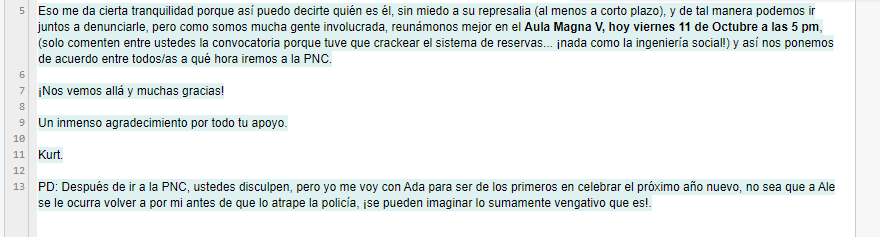


            </article>

            <article class="post5" id="post5">

                <h2>Viernes 11</h2>

                <p> Este día finalmente conoceríamos a Kurt, y podríamos denunciar el plan de destrucción de Ale Rav.
                    Llegue al aula donde nos había convocado Kurt y se mostró al público, nos contó un poco de la
                    relación que tuvo con Ale Rav y de como fue descubriendo su plan. De pronto comenzó a mostrar
                    malestar, y cuando menos lo esperábamos, cayó al suelo. Kurt había sido envenenado, estaba muerto.
                </p>

                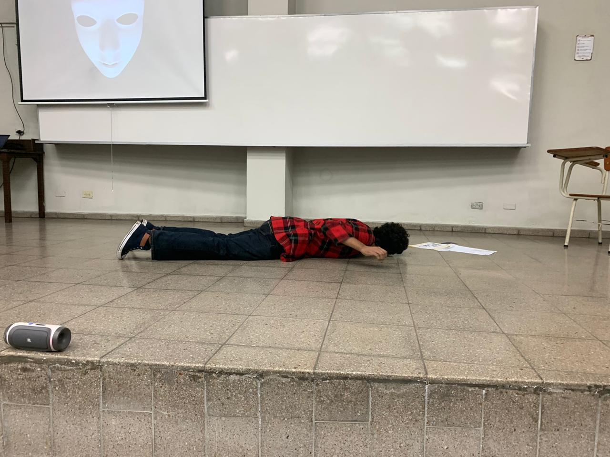

                <p> Entre las cosas que sostenía en su mano se encontraban varios papeles, pero se encontró también un
                    codigo QR. Luego de saber que toda la comunicación con él fue a base de estos códigos, lo primero
                    que realizamos con el grupo fue analizar dicho código, y como era de esperar, se trataba de un
                    último mensaje, un mensaje de despedida, mensaje que Kurt sabía que leeriamos en caso de su muerte.
                </p>

                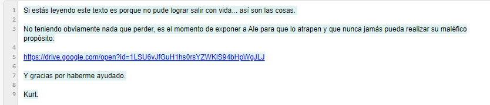

                <p>En su mensaje había dejado un enlace a un video, en el que se veía a Kurt contándonos la identidad
                    real de Ale y así nosotros poder saber quien estaba detrás de todo esto. Bajo su propio riesgo
                    decidió irse a grabar a Ale Rav y logró su cometido, pero por un precio alto. Ale Rav era Erick
                    Varela, catedrático del Departamento de Electrónica e Informática y que fue nuestro catedrático de
                    la materia de Bases de Datos el ciclo anterior.</p>

                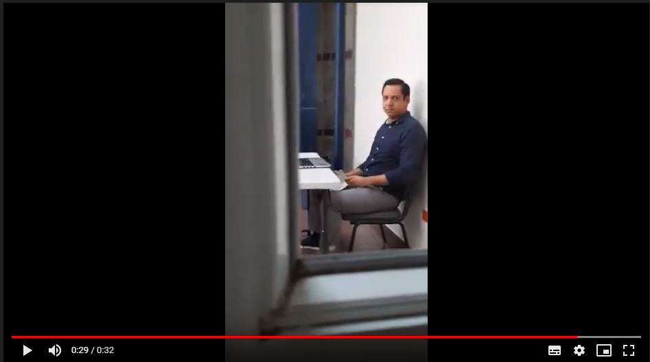
            </article>
        </section>
    </main>
</body>

<script src="JS/script.js"></script>

</html>